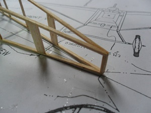

วิธีการทำเครื่องบินจำลองจากเครื่องบินจริงประเภท Peanut scale ซึ่งมีกติกาว่าต้องจำลองมาจากเครื่องบินที่มีอยู่จริง กางปีกไม่เกิน 13 นิ้ว ขั้นตอนแรกก็คือการเลือกแบบที่จะทำ สำหรับผู้ที่ยังไม่เคยทำมาก่อนก็ขอให้เลือกแบบที่เป็นชนิดปีกสูง เพราะปรับแต่งได้ง่ายกว่าเครื่องบินปีกต่ำ นอกจากนั้นก็ดูแบบที่มีพื้นที่ปีกเยอะหน่อย ให้มีส่วนหัวยาวและมีขนาดใหญ่พอที่จะเปลี่ยนยางหรือใส่ยางได้ง่าย
เครื่องที่เลือกทำนี้เป็นแบบ Huntington H-12 เป็นเครื่องบินที่สร้างขึ้นในปี 1912 เพื่อเป็นเครื่องบินส่วนตัวที่สร้างเองได้ง่าย แบบแปลนของเครื่องบินจำลองนั้นสามารถหาได้จากในเว็บนี้
เมื่อได้แบบแปลนมาแล้วก็ต้องลองวัดขนาดดุก่อนว่ากางปีกได้ตามกติกาหรือไม่เพราะแบบแปลนเหล่านี้ได้ผ่านการย่อหรือขยายมาหลายหนแล้ว อาจจะเพี้ยนได้หากจะเอาไปประกวดก็อย่าให้กางปีกเกินกำหนด แต่หากเล็กเกินไปเราก็จะเสียเปรียบ
อุปกรณ์ที่ใช้ในการสร้างก็คิอมีดคัตเตอร์ที่ใช้ในการตัดซอยไม้ แต่ในการตัดนั้นแนะนำให้ใช้ใบมีดโกนหักมาติดกับด้าม ทั้งนี้เพราะเราทำงานกับไม้ขนาดเล็ก ใบมีดโกนจะตัดได้เรียบกว่าคัตเตอร์ อีกอย่างก็คือกระดาษทรายที่ติดกับไม้แบนๆที่จะช่วยให้การขัดแต่งทำได้ง่ายขึ้น

เครื่องบินประเภท scale นี้จะทำคล้ายๆกันคือสร้างโครงด้านข้างขึ้นมาสองข้าง จากนั้นก็ใช้ไม้ด้านขวาง (cross piece)ติดโครงสองด้านนี้เข้าด้วยกันเป็นคล้ายๆกล่องสี่เหลี่ยมนั่นเอง จะสังเกตว่าด้านหัวนั้นจะเป็นรูปโค้งดังนั้นจึงต้องใช้วิธีทำให้ไม้ด้านหัวเป็นรูปโค้งเสียก่อน โดยต้องทำแบบขึ้นมาแล้วใช้ไม้ที่แช่น้ำให้อ่อนตัวมาพันติดกับแบบ พอแห้งแล้วจึงแกะออกมา ถ้าหากไม่ทำเช่นนี้แต่เอาไม้มาทาบกับแบบแล้วใช้เข็มหมุดเป็นตัวดัดเลย พอดึงออกจากแบบ ไม้จะคืนตัวดึงให้ส่วนหัวผิดรูปไป

การทำโครงลำตัวนั้น ครั้งแรกก็ทำโครงอันแรกก่อน หลังจากนั้นก็ทำโครงอันที่สองโดยทำซ้อนกับโครงอันแรกเพื่อโครงทั้งสองจะได้มีขนาดเท่าๆกัน เมื่อโครงทั้งสองนี้แห้งดีแล้วก็นำมาขัดแต่งให้เท่ากันจริงๆ จากนั้นก็ประกอบเข้าด้วยกันโดยเริ่มจากด้านท้ายแล้วใส่ไม้ด้านขวางไล่มาเรื่อยๆ ในการติดไม้ขวางนี้ก็ต้องระวังให้ได้ฉากด้วย

พอมาถึงส่วนหัวจะเห็นว่ามันสอบลง การจะติดไม้ขวางแล้วเอามือจับไว้จนกว่ากาวแห้งน่าจะลำบากเกินไปหน่อย ดังนั้นก็ต้องทำตัวช่วยซึ่งเป็นกรอบไม้ตามในรูป เอาลำตัวค่อยๆสอดเข้าไป กรอบนี้ก็จะเป็นตัวบังคับให้ได้ตามขนาดโดยไม่ต้องเอามือมาคอยจับไว้
สำหรับแพนหางนั้นก็ใช้วิธีการลามิเนตโดยใช้ไม้ที่นำไปแช่น้ำจนอ่อนตัวแล้วมาติดทาบกับแบบ พอแห้งสนิทจึงเอาออกมาติดตามแบบ ชิ้นส่วนด้านท้ายนี้ควรหาไม้เบาๆมาทำเพราะถ้าหนักเกินไปก็จำเป็นที่จะต้องถ่วงน้ำหนักด้านหัวเพิ่มทำให้หนักขึ้นโดยไม่จำเป็น มีข้อมูลว่าถ้าด้านหางหนักเกินไป 1 กรัม จะต้องใช้น้ำหนักถ่วงที่หัวถึง 3 กรัม
ในส่วนของเอ็นปีกก็จะใช้วิธีทำเอ็นปีกที่เป็นแบบขึ้นสองอัน จากนั้นก็เอาเอ็นปีกที่เหลือมาไว้ตรงกลางแล้วใช้กระดาษทรายขัดให้เท่าๆกัน การสร้างปีกก็ทำตามแบบ มีจุดที่ต้องระวังคือเอ็นปีกด้านในสุดที่ต้องมีมุมเอียงออกตามมุมยกของปีก
ลำตัวและปีกก็ใกล้เสร็จแล้วนะครับ ขอให้สังเกตุด้านท้ายของลำตัวด้านล่าง ช่องท้ายสุดจะมีไม้ชิ้นเล็กใส่ไว้เพื่อรับการติดไม้รับหาง ส่วนช่องถัดมาจะเว้นไม่บุกระดาษเพื่อใช้ในการใส่ยางหรือเปลี่ยนยางได้ง่ายนั่นเอง สำหรับปีกก็ต้องขัดชายหน้าและหลังให้เป็นรูปแอร์ฟอล์ยตามแบบ
ที่ส่วนหัวนั้นใช้ไม้ซ้อนกันให้หนาเท่าในแบบ ขัดตามแบบแปลน ชิ้นหน้าสุดถอดได้เพื่อความสะดวกในการใส่ยางหรือปรับแต่งการบินทีหลัง การเจาะรูเพื่อติดท่ออลูมิเนียมจะต้องมีมุมกดและหันเอียงไปทางซ้ายเล็กน้อย เพื่อเป็นการทำให้เครื่องบินทำการบินเลี้ยวซ้ายตามแนวฉุดของใบพัด
ใส่ไม้ที่ตำแหน่งที่จะติดตั้งปีกและไม้ด้านบนที่จะเป็นช่องสำหรับที่นั่งนักบิน
ขั้นตอนต่อไปเป็นการบุกระดาษลำตัว ปีกและแพนหาง
โดยปีกนั้นจะบุด้านล่างก่อน ใช้กาวแท่งทาขอบโดยรอบแล้ววางกระดาษลงไปเอานิ้วรีดให้เรียบแต่ไม่ต้องให้ตึงเกินไป
ต่อไปก็ลงรายละเอียดละครับ ติดตั้งฐานล้อ ไม้ค้ำใต้ปีก ใส่เครื่องยนต์ ให้ใกล้เคียงเครื่องบินจริงๆ ในส่วนของไม้ค้ำปีกและไม้ฐานล้อนั้นจะเป็นไม้ที่เขาลบเหลี่ยมและมีภาคตัดขวางเป็นรูปหยดน้ำ (tear drop)ทั้งนี้เพื่อเป็นการลดแรงต้าน สำหรับเครื่องบินจำลองนี้ไม้จะมีความกว้างเพียง 1/8″ ถ้าจะตัดออกมาแล้วขัดให้เป็นรูปหยดน้ำมันค่อนข้างลำบาก จึงต้องใช้เทคนิกการขัดเสียก่อนแล้วจึงค่อยตัดออกมา ดูรูปประกอบคงเข้าใจ
ทำไปเรื่อยๆ วันละเล็กวันละน้อย เมื่อทำไม้ฐานล้อและไม้ค้ำปีกเสร็จก็ติดตั้งปีกได้ ผมใช้วิธีเอาลำตัวหงายขึ้นเอาไม้รองใต้ลำตัวแล้วถึงติดปีก
วิธีนี้น่าจะสดวกกว่าเอาไม้หนุนปีกทีละข้าง พอปีกติดแน่นดีแล้วก็ติดไม้ค้ำปีกและไม้ฐานล้อ ติดแพนหางเข้าไป
สำหรับการทำล้อ ถ้ามีมีดตัดที่เป็นคล้ายๆวงเวียนก็จะง่ายขึ้น ตัดออกมาสี่ชิ้นแล้วเอามาประกบกันให้หนาตามต้องการ
ตอนนี้เครื่องบินก็มาถึงตามที่เห็นครับ
ทำต่อให้เสร็จเสียที ไม้ยึดยางด้านหลังเอามาจากไม้จิ้มฟัน จากนั้นก็เป็นการลงรายละเอียดต่างๆเช่นล้อ เครื่องยนต์และติดตั้งใบพัด
เครื่องยนต์นั้นเราใช้หลอดดูดตรงส่วนที่เป็นข้องอมาทำโดยใส่ไม้บัลซ่ากลมเข้าไปข้างในแล้วทาด้วยสีดำ
ใบพัดที่ใช้เป็นใบพัดพลาสติกขนาด 4.5 นิ้ว ซึ่งสามารถใช้ใบพัดที่ทำจากไม้บัลซ่าหรือจากขวด จากถ้วยพลาสติกขนาดเส้นผ่าศูนย์กลาง 2.5-3 นิ้วมาทำได้อันจะทำให้เบากว่าใบพัดที่เห็น
 เครื่องที่ทำสำเร็จหน้าตาเป็นอย่างที่เห็นนี้
เครื่องที่ทำสำเร็จหน้าตาเป็นอย่างที่เห็นนี้